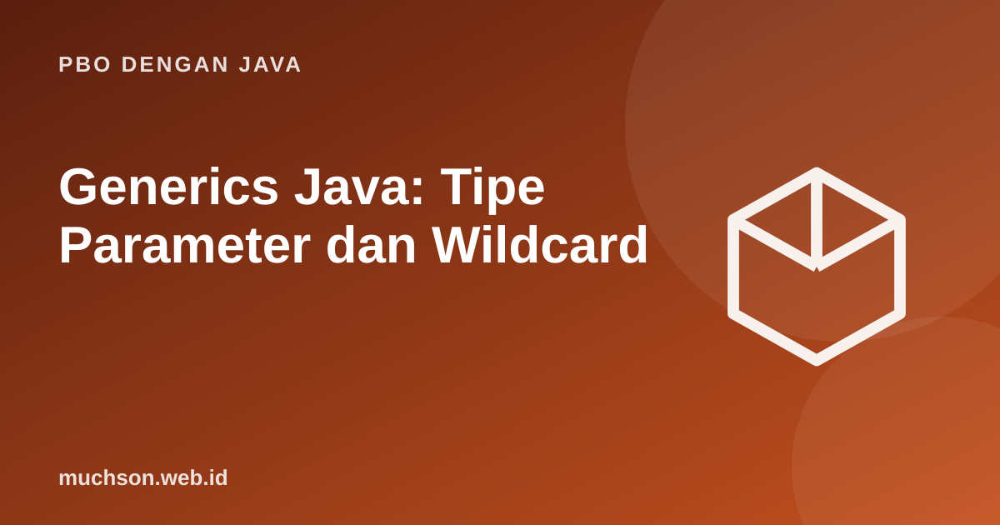

Beranda › Artikel › PBO dengan Java
PBO dengan JavaGenerics Java: Tipe Parameter dan Wildcard
Sebelum generics, koleksi menyimpan Object dan kita harus casting sambil berharap tidak keliru. Generics memindahkan pemeriksaan tipe dari saat berjalan ke saat kompilasi: kesalahan tertangkap lebih dulu dan kode tidak dipenuhi casting.
Sebaiknya sudah paham: interface, collections

Setelah membaca dan mencoba materi ini, Anda mampu:
- menjelaskan masalah yang diselesaikan generics
- membuat class dan method generik
- memakai batasan tipe (extends) dan wildcard
- menerapkan aturan PECS
- menjelaskan type erasure dan batasannya
Masalah tanpa generics
import java.util.*;
public class Main {
@SuppressWarnings({"rawtypes", "unchecked"})
public static void main(String[] args) {
List mentah = new ArrayList(); // tipe mentah (raw): jangan dipakai
mentah.add("teks");
mentah.add(42);
try {
String s = (String) mentah.get(1); // baru ketahuan saat berjalan
} catch (ClassCastException e) {
System.out.println("ClassCastException saat runtime");
}
List<String> aman = new ArrayList<>();
aman.add("teks");
// aman.add(42); // ditolak kompiler
String s = aman.get(0); // tanpa casting
System.out.println(s);
}
}ClassCastException saat runtime
teks
Class dan method generik
class Kotak<T> {
private T isi;
void simpan(T isi) { this.isi = isi; }
T ambil() { return isi; }
}
class Pasangan<K, V> {
final K kunci; final V nilai;
Pasangan(K kunci, V nilai) { this.kunci = kunci; this.nilai = nilai; }
@Override public String toString() { return kunci + " => " + nilai; }
}
public class Main {
static <T> void tukar(T[] a, int i, int j) { // method generik
T t = a[i]; a[i] = a[j]; a[j] = t;
}
static <T extends Comparable<T>> T maks(T a, T b) { // batasan: T harus bisa dibandingkan
return a.compareTo(b) >= 0 ? a : b;
}
public static void main(String[] args) {
Kotak<String> k = new Kotak<>();
k.simpan("halo");
System.out.println(k.ambil().toUpperCase());
System.out.println(new Pasangan<>("umur", 20));
Integer[] angka = {1, 2, 3};
tukar(angka, 0, 2);
System.out.println(java.util.Arrays.toString(angka));
System.out.println(maks(3, 9) + " " + maks("apel", "mangga") + " " + maks(2.5, 1.5));
}
}HALO
umur => 20
[3, 2, 1]
9 mangga 2.5
Generics tidak kovarian
List<Integer> bukan subtipe dari List<Number>, walau Integer adalah Number. Bila diperbolehkan, kita bisa memasukkan Double ke list yang sebenarnya berisi Integer. Wildcard menyelesaikan kebutuhan ini dengan aman.
| Bentuk | Artinya | Boleh membaca? | Boleh menulis? |
|---|---|---|---|
| List | List berisi tipe apa pun | Sebagai Object | Tidak (kecuali null) |
| List | List berisi Number atau turunannya (producer) | Ya, sebagai Number | Tidak |
| List | List berisi Integer atau induknya (consumer) | Sebagai Object | Ya, Integer |
PECS: Producer Extends, Consumer Super. Bila parameter menghasilkan nilai untuk Anda baca, pakai ? extends T. Bila ia menerima nilai yang Anda tulis, pakai ? super T.
import java.util.*;
public class Main {
static double jumlah(List<? extends Number> daftar) { // producer: hanya membaca
double t = 0;
for (Number n : daftar) t += n.doubleValue();
return t;
}
static void isiAngka(List<? super Integer> tujuan) { // consumer: menulis Integer
for (int i = 1; i <= 3; i++) tujuan.add(i);
}
public static void main(String[] args) {
System.out.println(jumlah(List.of(1, 2, 3)) + " " + jumlah(List.of(1.5, 2.5)));
List<Number> angka = new ArrayList<>();
List<Object> objek = new ArrayList<>();
isiAngka(angka);
isiAngka(objek);
System.out.println(angka + " " + objek);
}
}6.0 4.0
[1, 2, 3] [1, 2, 3]
Type erasure
Generics hanya ada saat kompilasi. Kompiler menghapus parameter tipe dan memasukkan casting yang diperlukan, agar kompatibel dengan kode lama. Akibatnya beberapa hal tidak bisa dilakukan:
new T()ataunew T[10]tidak diperbolehkan.x instanceof List<String>tidak diperbolehkan (hanyaList<?>).- Tipe primitif tidak bisa menjadi argumen tipe (
List<int>); pakai wrapper. - Dua method overload yang berbeda hanya pada argumen tipe generik bentrok setelah erasure.
import java.util.*;
public class Main {
public static void main(String[] args) {
List<String> a = new ArrayList<>();
List<Integer> b = new ArrayList<>();
System.out.println(a.getClass() == b.getClass()); // sama saat runtime: ArrayList
}
}true
1. Tulis method generik salin(List sumber, List tujuan).
static void salin(List s, List t) { for (T x : s) t.add(x); } 2. Mengapa tidak bisa new T[10]?
3. Buat class generik Tumpukan dengan push, pop, dan kosong().
4. Apa beda List dan List
- Generics memberi keamanan tipe saat kompilasi tanpa casting.
- Class dan method generik; batasan dengan extends.
- Wildcard dan PECS untuk fleksibilitas; generics invarian.
- Type erasure membatasi operasi saat runtime.
Tanya jawab
Apa itu diamond operator?
Mengapa tidak memakai raw type?
Apakah generics ada di C++?
Referensi
- Oracle: Generics (Java Tutorials)
- Oracle: Wildcards
- Joshua Bloch, Effective Java (edisi ke-3, Addison-Wesley, 2018)
- The Java Language Specification